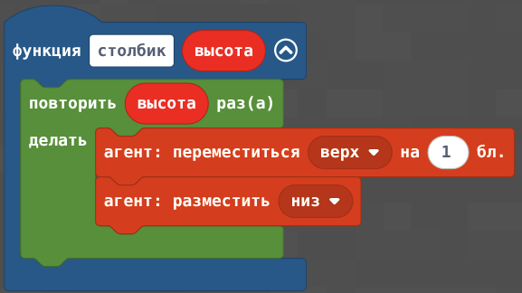
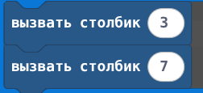
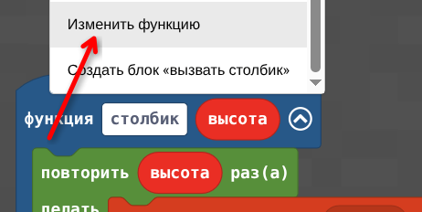

🎯 Цели занятия
- Понять, зачем нужны функции и чем они лучше копирования кода
- Научиться создавать и вызывать свои функции в MakeCode
- Освоить аргументы — «настройки», которые мы передаём в функцию
- Выполнить 6 практических заданий с агентом
📋 План занятия
| Этап занятия | Время | Что делаем |
|---|---|---|
| Орг. момент | 5 мин | Вспоминаем занятие 3.5: повторяли код дерева |
| Теория: функции | 15 мин | Что такое функция, вызов, аргументы |
| Интерактив | 15 мин | Сравниваем подходы, отвечаем на вопросы |
| Практика: задания 1–3 | 25 мин | Простые функции и первый аргумент |
| Практика: задания 4–6 | 25 мин | Функции со строительством и лесом |
| Бонус и итоги | 5 мин | Сложные функции, рефлексия |
| Итого | 90 мин | — |
1 Проблема: один и тот же код снова и снова
❌ Копирование кода
[код дерева — 15 блоков]
двигаться вперёд 6
[код дерева — те же 15 блоков]
двигаться вперёд 6
[код дерева — снова 15 блоков]≈ 45 блоков. Ошибка в одном месте — ломается всё.
✅ Функция
функция дерево:
[код дерева — 15 блоков]
вызвать дерево
двигаться вперёд 6
вызвать дерево
двигаться вперёд 6
вызвать деревоКод дерева написан один раз. Вызов — одна строка.
2 Что такое функция?
Функция — это именованный набор команд, который мы описываем один раз, а потом вызываем когда нужно.
Аналогия из жизни
Функция — как карточка с инструкцией «Как поставить чайник». Ты один раз записал шаги на карточку. Когда хочешь чай — просто берёшь карточку и выполняешь. Не нужно каждый раз заново придумывать, как включать чайник.
| Термин | Что значит | Блок MakeCode |
|---|---|---|
| Функция | Именованный кусок программы | кнопка "создать функцию" (вкладка Функции) |
| Вызов | Запуск функции | вызвать имя_функции |
| Аргумент | Значение, которое мы «передаём» в функцию | Параметр в вызове функции (например, высота: 3) |
| Параметр | «Пустое место» в функции для аргумента | Добавляем при создании функции (например, высота) |
вызвать ….
3 Аргументы: одна функция — разные настройки
Без аргументов функция всегда делает одно и то же. С аргументами мы можем менять поведение, не переписывая код.
-- Функция с параметром "высота"

-- Вызовы с разными аргументами:

Как добавить аргумент к существующей функции в MakeCode:
- Нажми правой кнопкой мыши на блок
твоей функции - Нажми на кнопку Изменить функцию в выпадающем меню:

- Выбери тип параметра в «Добавить параметр» и назови его (например,
высота) - Внутри функции используй этот параметр вместо числа в цикле
высота). Аргумент — конкретное число при вызове (3, 7). Одна функция — много разных аргументов!
4 Интерактив: закрепляем теорию
🧩 Что удобнее?
Нужно построить 5 одинаковых столбиков. Какой способ лучше?
🔢 Аргумент или параметр?
В записи вызвать столбик высота: 5 число 5 — это…
📞 Вызов функции
Какой блок запускает уже созданную функцию?
📋 Правильный порядок
Перетащи шаги в логичном порядке (сверху вниз — от первого к последнему):
- Вызвать функцию в программе
- Создать функцию и написать внутри команды
- Запустить программу и проверить результат
Нажми на вопрос — Алиса ответит тебе прямо сейчас!
Например: «Алиса, зачем программисты используют функции?»
🛠️ Практика: 6 заданий с функциями
Открой Minecraft Education и MakeCode. После каждого задания запускай программу и смотри, что делает агент.
1 Первая функция (без аргументов)
Создай функцию столбик: агент 3 раза ставит блок и поднимается вверх.
повторить 3 раза → [подняться вверх, поставить блок]. Снаружи: при команде "тест" → вызвать столбик.2 Несколько вызовов — видим разницу!
Вызови столбик 3 раза с паузой «шаг вперёд» между ними. Сравни длину программы с тремя копиями кода.
3 Первый аргумент: высота столбика
Добавь параметр высота в функцию столбик. Цикл внутри: повторить высота раз.
двигаться вперёд, чтобы столбики не слились. Один код функции — три разные высоты!4 Функция «квадрат» с аргументом
Создай функцию квадрат с параметром сторона. Внутри — вложенный цикл, как в занятии 3.4.
повторить сторона раз (строка). Внутренний: повторить сторона раз [поставить блок, вперёд]. Не забудь повороты в конце строки!5 Функция «дерево» — возвращаемся к лесу!
Перенеси код одного дерева из занятия 3.5 в функцию дерево с аргументом высота_ствола.
опуститься вниз столько раз, сколько было высота_ствола.6 Мини-лес из функций
Собери всё вместе: команда чата лес вызывает деревья в цикле.
⭐ Бонусные задания
📝 Проверь себя
1. Зачем нужны функции?
2. Где в MakeCode создать новую функцию?
3. Что такое аргумент?
4. В функции дерево (высота_ствола) слово высота_ствола — это…
5. Что изменится, если в функции «столбик» поменять цикл на «повторить высота раз» и вызывать с разными числами?
💭 Рефлексия
Сравни опыт занятий 3.5 и 4.1: